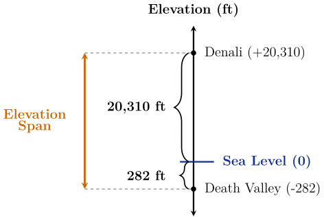
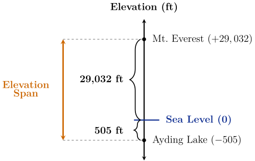
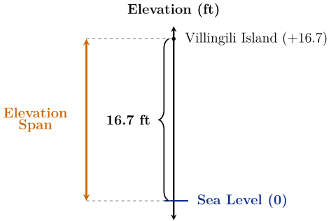

Introduction
Elevation is the height of a point on earth above (\(+\)) or below (\(-\)) sea level. In
geology, the elevation span or topographic relief of a region is the difference
between its highest and lowest elevations. Regions with large spans are typically
rugged, with high mountain ranges and deep valleys, whereas regions with small
spans are generally flatter and more uniform.
\[ \textbf {Elevation Span} = \textrm {Highest Elevation} - \textrm {Lowest Elevation} \]
By calculating the difference between the highest and lowest elevations, geologists
can determine if a region is being built up by internal forces (large span) or worn
away by the elements (small span).
When both points of interest are above sea level, finding the span is easy. In Ohio, for
example, the highest point (Campbell Hill) is 1550 feet above sea level, and the
lowest point (Ohio River) is 455 feet above sea level, so the elevation span of Ohio is
\[ 1550 - 455 = 1095 \ \textrm {feet}. \]
When one elevation is below sea level, finding the span isn’t as straightforward. For
instance, in the United States, the highest peak is 20,310 feet above sea level in
Denali, Alaska and the lowest basin is 282 feet below sea level in Death
Valley, California. So, the elevation span of the U.S. is given by the difference
\[ 20,310 - (-282). \]
However, from the diagram below, you can see that the span of the U.S. can be found
by adding.
\[ 20,310 + 282 = 20,592 \ \textrm {feet} \]

Show Alt Text
Vertical number line showing the elevation span for the United States. Points are
plotted at 20,310 for Denali and negative 282 for Death Valley, with sea level marked
at zero. Braces indicate a distance of 20,310 units above zero and 282 units below
zero. The total elevation span is shown to the left as the combined vertical distance
from negative 282 to 20,310.
Although it seems paradoxical, this illustrates a key concept: subtracting a
number is the same as adding its opposite.
\[ 20,310 - (-282) = 20,310 + 282 \]
China has the largest elevation span in the world. Its highest elevation is 29,032
feet
above sea level on Mount Everest and its lowest elevation is 505 feet
below sea
level at Ayding Lake. Write the subtraction problem to find China’s elevation
span.
\(29,032 - 505 \) \(-29,032 - (-505)\) \(29,032 - (-505)\) \(-29,032 - 505\)
Use the diagram below to write the subtraction problem as an equivalent addition
problem. Then find China’s elevation span.

Show Alt Text
Vertical number line showing the elevation span for China. Points are plotted at
29,032 (Mount Everest) and negative 505 (Ayding Lake). Braces indicate a distance
of 29,032 units above zero and 505 units below zero. The total elevation span
is shown as the combined vertical distance from negativve 505 to 29,032.
\(-29,032 + (-505)\) \( 29,032 + (-505)\) \(-29,032 + 505\) \(29,032 + 505\)
Do not include commas in your answer.
China’s Elevation Span = \(\answer {29537}\) feet
An archipelagic nation is a country made up of a group of islands and the
surrounding water. The Maldives is an archipelagic nation of over 1,000 islands
located in the Indian Ocean. It is the lowest-lying country on Earth, with an average
ground level elevation of less than 5 feet above sea level. It also has the world’s
smallest elevation span: just 16.7 feet above sea level. The islands are very
flat!
Highest Elevation: 16.7 feet above sea level (Villingili Island)
Lowest Elevation: 0 feet, at sea level (Indian Ocean)
Scientists predict that most of the Maldives will be uninhabitable or completely
submerged by the year 2100 if sea levels continue to rise at current rates.

Show Alt Text
Vertical number line showing the elevation span for the Maldives. A point is plotted
at 16.7 for Villingili Island, and sea level is marked at zero. A brace indicates a
distance of 16.7 feet above zero. The total elevation span is shown to the left as the
vertical distance from zero to 16.7.